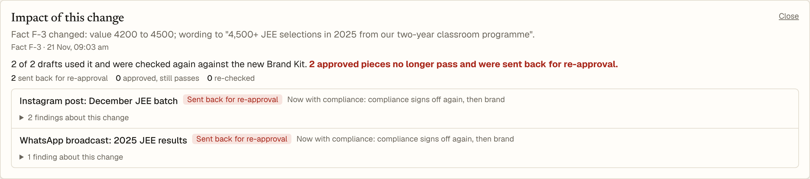
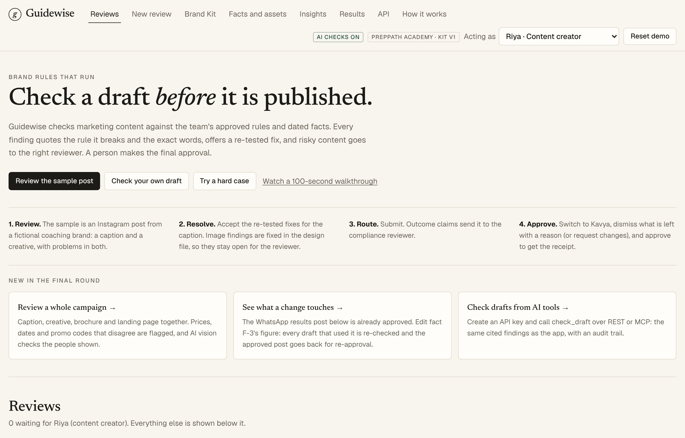

CodeNova India 2026 · Round 3, the final product · Team Guide Wise
Brand rules that run. Guidewise checks marketing content against a team's own approved rules and dated facts before it is published. Every finding quotes the exact words and the rule it breaks, every fix is re-tested before it is offered, risky content goes to the right reviewer, and a person approves the final version. In Round 3 it learned to follow a change through everything it touches, to govern AI writing tools at the source, and to review a whole campaign at once.
| Live product | https://guidewise-kohl.vercel.app · no sign-in; each visitor gets a private demo workspace |
| Source code | https://github.com/mahak867/Guide-wise · 40 commits in the Round 3 window, all after it opened (18 Nov, 11:59 PM IST) |
| Walkthrough video | https://guidewise-kohl.vercel.app/demo.webm (Round 2 journey, 100 seconds) |
| Documentation | In the repository: docs/ARCHITECTURE.md, TESTING.md, KNOWN_ISSUES.md, ROADMAP.md, API.md, CHANGELOG.md |
| Demo brand | PrepPath Academy, a fictional JEE/NEET coaching brand written by the team |
| Team | Mahak Fahad (team leader, Backend + AI/ML) · Roshini R (Frontend + Design/UI-UX) · Chennai Institute of Technology |
Change impact, the API and MCP server, and campaign review with AI vision. Each was tested on the live site against the exact test we wrote down at Round 2 (next pages).
Text: 92% precision and 98% recall with AI on 40 held-out drafts. Images: 20 of 20 planted errors caught, no false alarms. Privacy: 0 leaks in 144 AI prompts. 81 unit tests; a 20-step journey, 51-step sweep and 93-check probe pass on the live site.

Promised at Round 2: changing or expiring a fact, or amending a rule, lists every open draft and approved piece that used it, re-checks them, and marks approved pieces that no longer pass as needing re-approval. Each amended rule shows its dismissal rate before and after.
Delivered. Saving a fact (value, dates, wording, delete) or a rule (enforce, demote, amend, delete) runs an impact check in the same request. A draft uses a fact if it quotes the value, names the subject near a figure, or names the student. Every such draft is re-checked; an approved one that now fails is moved back to the right reviewer with the reason and a "Back for re-approval" banner, and the event is logged. The Impact panel lists everything touched. Insights shows each amended rule's dismissal rate before and after the amendment. Saving the same change twice reopens nothing.

Tested: live probe — an approved and an open draft both cite F-3; changing F-3 lists both, sends the approved one back with the reason, re-checks the open one, and a repeat save changes nothing (6 checks). Unit tests cover fact use by value, keyword and student name.
Promised: a REST API with scoped keys and an MCP server exposing get_brief and check_draft; an in-app playground and a per-key audit trail. Test: call check_draft from the playground and from an MCP client → the same cited findings as the app, and a new audit entry.
Delivered. The API page creates keys with scopes (brief:read, draft:check); a key is shown once, stored only as a SHA-256 hash, and can be revoked. get_brief returns the rules in force for a channel and only the facts valid today, so an AI writer never sees an expired or embargoed figure. check_draft runs the same pipeline as the app and returns the same cited findings. Both are served over REST (/api/v1/…) and as an MCP server (/api/mcp, official SDK, Streamable HTTP) that an MCP client such as Cursor or Claude Code adds with the config or command shown on the page. Every call is audited with key, route, status and time; keys are rate-limited.

Tested: live probe, 13 checks — key creation is manager-only; get_brief excludes the expired F-11 and the embargoed F-9; check_draft returns exactly the app's findings through REST and through a real MCP SDK client; a missing, wrong, revoked or under-scoped key is refused; every call appears in the audit; another workspace cannot see the keys. Full reference in docs/API.md.
Promised: review a whole campaign (caption, creatives, landing-page copy, PDF brochure) and flag inconsistencies across assets — prices, dates, claims, promo codes; AI vision for stylised text and for photos of people, flagged for a consent check. Test: a three-asset campaign with a price mismatch and an unconsented student photo → both found, cited and routed to compliance.
Delivered. A review now takes a caption, up to 4 creatives and up to 4 documents (landing page, brochure, email; pasted or uploaded as PDF or Word). Every code check runs on every document (the AI checks run on the caption), and the consistency check compares prices, percentages, counts, dates and promo codes across all sources, quoting both sides. AI vision reads text that OCR misses and reports people shown (described, never named), which raises a high-risk consent finding routed to compliance. If vision is unavailable the review says so rather than passing silently.


Tested: live probe, 5 checks — caption, a creative with an illustrated student and a brochure with a different fee: the price mismatch is found on the brochure and cited, the person is found without being named, and the draft routes to compliance. Unit tests cover every unit compared and the format of the rule's own tests. Try it: New review → Use the sample campaign → Run review.
| Area | What it does |
|---|---|
| Review | Paste copy or upload DOCX/PDF; up to 4 images and 4 campaign documents; goal, audience, call to action, channel, and locked phrases no fix may remove; confidential mode (never sent to AI). |
| Code checks | Preferred terms, banned phrases, approved contacts, student results (course and dated consent), results disclaimer (same-language check for Hindi), brand-name spelling, capitals for emphasis, length per content type, sentence length, inclusive wording, invisible characters, and every figure against the Facts Register by subject then value (lakh and crore understood). |
| AI checks | Claims and voice rules, one rule per call, run twice when they find something; disagreement becomes a suggestion. Claude → Groq → Gemini with fallback, time caps and a circuit breaker; answers validated with Zod and cached. |
| Verifier | Code drops any finding whose quote is not in the draft, image or document, or whose rule or fact does not exist: no source, no flag. |
| Images | In the browser: OCR, palette (CIELAB), WCAG contrast, alt text, logo found by masked cross-correlation and checked for size and clear space. New: AI vision for stylised text and people shown. |
| Campaigns new | Every code check on every document; prices, figures, dates and promo codes compared across caption, images and documents. |
| Facts Register | Evidence, owner, valid-from, valid-until, required disclosure; embargoed, expired and wrong-subject figures flagged. New: every change shows its impact. |
| Fixes | Each fix applied and re-checked before it is offered; edit before accepting; Accept all works through follow-ups. |
| Brand Kit | Rules with test sentences and an enforce gate, per-channel rules, versioning, JSON export and import, and a guide compiler for pasted text, PDF or Word. |
| Regulation pack | CCPA coaching-sector guidelines (2024), with penalty precedents as reported in the press. |
| Workflow | Four roles enforced on the server, risk routing by a fixed table, comments, versions with word-level changes, request changes, audit log, approval record with SHA-256 fingerprint. New: re-approval when a fact or rule change breaks an approved piece. |
| Insights | Most-flagged and most-dismissed rules, unclear rules, fact expiry watch, AI-drafted rule amendments re-tested by code. New: dismissal rate before and after each amendment. |
| API and MCP new | Scoped, hashed, revocable keys; get_brief and check_draft over REST and MCP; playground; audit trail; rate limit. |
| Privacy | Emails, phones (mobile and landline), Aadhaar, PAN and card numbers masked before any AI call; confidential drafts never sent. |
| Hard cases | Seven one-click drafts built to beat a checker, each with what to look for. |
| Usability | One-click sample post and sample campaign, guided tour, private workspace per visitor, works on a phone, clear empty and error states. |
Only steps 3 and 4 use AI. Numbers are never compared by AI: it only locates claims; code re-reads each value and compares it.
| Layer | Choice and reason |
|---|---|
| App and API | Next.js 16 App Router (TypeScript), React 19, Tailwind CSS 4 on Vercel, functions in Mumbai next to the database. |
| Data | Supabase Postgres, 8 migrations; every row scoped by workspace. Round 3 added drafts.impact, drafts.assets and api_keys (hash only). |
| Change impact | src/lib/impact.ts: finds drafts that use a fact or rule, re-checks them with code, moves approved ones back and logs the event; called from the fact and rule routes in the same request. |
| API and MCP | src/lib/governance.ts holds getBrief and checkDraft, shared by REST (/api/v1), MCP (/api/mcp, @modelcontextprotocol/sdk, stateless Streamable HTTP) and the app, so all three give the same answer. src/lib/apikeys.ts: keys, scopes, rate limit, audit. |
| Campaigns and vision | src/lib/engine/consistency.ts compares units across sources; visual.ts turns vision output into findings; the verifier grounds image findings in what vision read and document findings in the document. |
| AI adapter | Claude, Groq (gpt-oss-120b, with gpt-oss-20b taking over while it is rate-limited), Gemini (3.5 Flash Lite, low thinking); images go to Gemini first. 12 s cap (25 s for images), a provider that is rate-limited or slow is rested, answers cached by text and image hash. |
| Suite | Result | What it covers |
|---|---|---|
| Unit tests (Vitest, CI) | 81 pass | Engine rules, fact matching, logo matching, verifier, fix re-testing, a deliberately wrong AI (8 tests), provider fallback and circuit breaker, change impact, campaign consistency, input validation, every rule's own tests |
| Browser journey (live) | 20 of 20 | Review, edit a fix, accept all, replace an image, route, approve, record, PDF upload, channels, confidential, Brand Kit export and import |
| UI sweep (live) | 51 of 51 | Every page at desktop and phone size (console and server errors, broken images and links, sideways scroll) and every control, including the API page and campaign |
| API probe (live) | 93 of 93 | Every route with bad input, wrong role and another workspace; the three improvements end to end, including a real MCP client |
| Fuzzing (CI) | 26 inputs | 12,000 emoji, Hindi, regex characters, HTML, null bytes, invisible characters, prompt injection, an 11,000-letter word: no crash, no invented quote, slowest review 25 ms. It found a slow email pattern (about 1 s on a long word), now fixed |
| Over the judging period | 3 dates | The sample post and the whole unit suite run with the clock set weeks ahead: the embargoed and expired examples still work. This found an embargo that would have lifted on 1 December, during judging; moved to 1 March 2027 |
| Evaluation | Precision | Recall | Other |
|---|---|---|---|
| Text, code checks only (40 held-out drafts) | 100% (93%–100%) | 74% (63%–83%) | 0 of 17 hard phrasings |
| Text, code and AI (live, run twice) | 92% (83%–96%) | 98% (92%–100%) | 17 of 17 hard; 83% same on both runs |
| Images (20 creatives) | 100% (0 false alarms in 40 clean checks) | 20 of 20 | Colour, contrast, logo |
| Privacy (24 + 3 drafts) | 0 leaks in 144 AI prompts | 8 kinds of personal data; canaries in confidential drafts | |
95% Wilson intervals; test-set fingerprint 4d33aae3cdaa2051, shown on the live Results page, which re-runs the code checks on demand. The numbers are optimistic because the team wrote both the rules and the drafts; real drafts are the first step on the roadmap.
| When | Step | Why | Cost |
|---|---|---|---|
| Dec 2026 | Pilot with 3 coaching centres. Their own guides compiled into Brand Kits; 50 real drafts each reviewed; precision and recall re-measured on those drafts and published beside the synthetic numbers. | Our numbers come from a set we wrote. Real drafts are the honest test. | Free tiers; about 20 hours of our time per centre |
| Dec 2026 | Accounts and organisations. Supabase Auth with the four roles, an organisation per centre, row-level security per organisation, invitations. | Replaces the demo role switcher (known issue 1). | Supabase Pro ₹2,100 (US$25) |
| Jan 2027 | Paid AI tier with a second provider. One paid key as the first choice, free tiers as fallback; per-organisation monthly AI budget with a warning at 80%. | Removes the free-tier rate limits (known issue 2). | Estimate: about 20 AI calls of about 2,000 tokens each per draft, under ₹1 per draft on a paid open-model tier; about ₹1,500 a month for a centre doing 1,500 drafts |
| Jan 2027 | Change impact, scheduled. A daily job that expires facts on their end date and runs the impact check, emailing the owner of every piece sent back for re-approval. | Today the impact check runs when someone edits a fact; expiry should not need a person. | Vercel Cron, included |
| Feb 2027 | Publishing integrations. Instagram, WhatsApp Business and Google Docs add-ons that call check_draft before posting, using the API built in Round 3. | Checks happen where people already write. | Developer time; API costs as above |
| Mar 2027 | Visual depth. Logo variants (reversed, monochrome) from an asset library; layout rules (logo position, minimum text size); vision checks for claims set in images of documents. | Known issues 4 and 10. | Vision calls about ₹0.5 per image |
| Q2 2027 | Regulation packs beyond coaching. ASCI guidelines for ed-tech, health and finance claims, each with tests and cited sources, reviewed by a lawyer before release. | The same engine serves other regulated sectors. | Legal review ₹30,000–50,000 per pack (one-off) |
| Q2 2027 | Pricing. Free for one user and 30 drafts a month; ₹1,999 a month per centre for the team plan with the API. | Covers AI and hosting at about 40% margin at 1,500 drafts a month. | — |
What we will measure: precision and recall on real pilot drafts (target above 90% with AI), time from draft to approval before and after, and whether rule amendments bring dismissals down.
| Member | Role | College | Course |
|---|---|---|---|
| Mahak Fahad (team leader) | Backend + AI / ML | Chennai Institute of Technology | B.E. Computer Science and Engineering, batch of 2029 |
| Roshini R | Frontend + Design / UI-UX | Chennai Institute of Technology | B.E. Computer Science and Engineering, batch of 2029 |